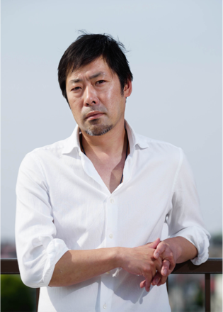
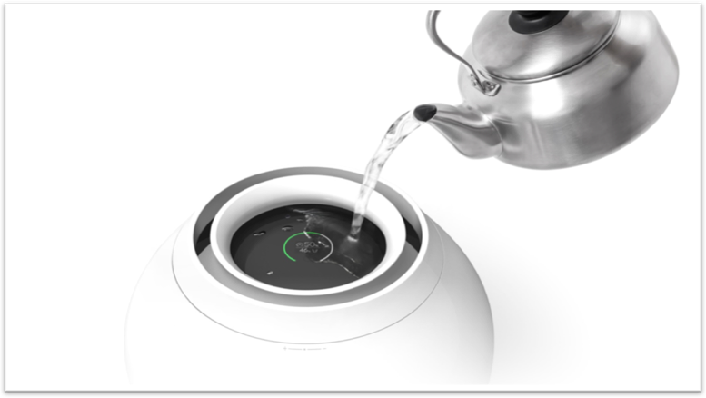
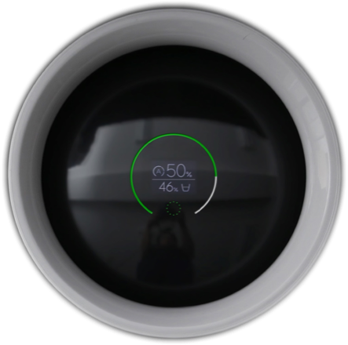
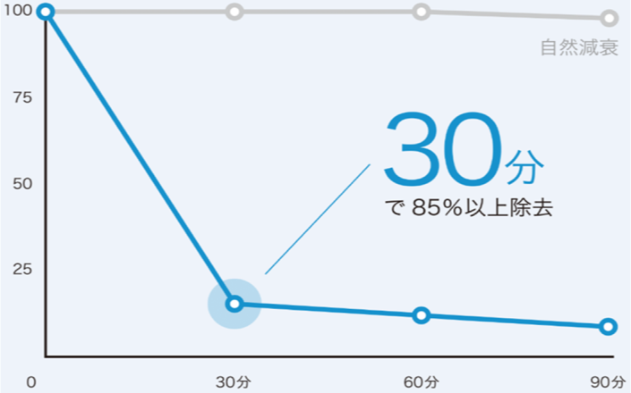
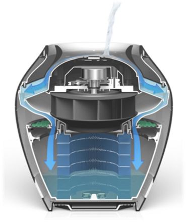

Коллекция BORK Gen Terao: Rain
BORK – международная компания специализирующаяся на бытовой технике премиум класса.
Совместно с BORK работают лучшие специалисты в области промышленного дизайна со всего мира, а производство техники осуществляется на первоклассных заводах Германии, Китая, Кореи, Японии, Турции, Франции и других стран. Качество и функциональность продукции BORK дает возможность не только выполнять привычные дела на высшем уровне, но и создать безупречный образ жизни.
Продукция BORK имеет более 45 престижных международных наград в области дизайна, таких как Red Dot Design Award, iF Design аward и т.д. Премии в области дизайна – это доказательство совершенного стиля и возможность создавать индивидуальное, неотразимое собрание бытовой техники в своем доме.
Одним из ярких примеров успешного сотрудничества является японская линейка климатической техники созданная известным промышленным дизайнером - Ген Терао.
Исключительный дизайн от Ген Терао. Ген Терао: «С момента нашего основания, мы используем философию: «Взять максимум от минимума.»
Это означает использование минимального числа деталей. Мы используем красоту минималистского дизайна. Обеспечиваем наибольшую выгоду при минимальном использовании энергии. Этот подход не достичь путем только одного прилива вдохновения. Это результат многолетних усилий и исследований.
Ген Терао: «Все продукты предназначены для того, чтобы быть наивысшего качества и красоты. Но самым главным для нас является то, что они созданы из мечты и идей. Продукты, которые мы делаем начинаются с мечты, которая у нас есть. У нас есть мечта, давайте подумаем о том, как мы можем сделать её реальностью. Разработать дизайн, изготовить продукт с использованием методов, которые мы считаем целесообразным. Для нас, наша продукция -просто мечты, которые обрели форму».
В возрасте 17 лет Ген Терао бросил школу. Он отправился в путешествие по Испании, Италии, Марокко и другим странам Средиземноморья. По возвращении в Японию, он начал музыкальную карьеру. На протяжении опыта подписания, а затем потери контракта с звукозаписывающей компанией, он оставался сосредоточенным на своей группе. В 2001 году, после того как его группа распалась, он решил заняться производством. Через самообучения и краш-курсы на заводах, он приобрел навыки в области дизайна и производства.
В 2003 он основал BALMUDA Design Ltd., которая изменила свое название на BALMUDA Inc. в апреле 2011 г. Он также является президентом компании.
Уникальная, интуитивно понятная и максимально удобная система залива воды дала название самому прибору– Rain. Никогда еще залив воды в увлажнитель не был столь прост и удобен. Объем воды - 4.2 литра. Воздухоочиститель RAIN не имеет тяжелого резервуара для воды; вместо этого вода наливается напрямую в прибор поверх дисплея.
Единственным элементом управления в RAIN является контрольное кольцо, расположенное в верхней части прибора. Выбор основных функций устройства осуществляется путем поворота или нажатия регулятора. Нажмите и удерживайте регулятор для включения/отключения устройства.
Red Dot является одной из ведущих премий в мире в области дизайна. Она имеет дело с проектами, которые были в продаже в последние два года и учитывает выдающиеся достижения дизайна, ссылаясь на девять критериев оценки, в том числе изобретательность, функциональность, эргономичность и долговечность. Стильный дизайн прибора идеально впишется в современные интерьеры, особенно эффектно он будет смотреться в просторных помещениях. Белоснежный корпус, выполненный из материалов самого высокого качества, подчеркивает его главную функцию – обеспечение чистоты и свежести воздуха. BORK A802 Rain удостоен авторитетной международной награды в области дизайна RedDot. Дизайн воздухоочистителя выполнен в форме традиционных японских ваз, в отличии от большинства простых и «квадратных» увлажнителей.
Все основные операции отображаются на OEL - дисплее. Объем воды, уровень влажности в помещении, скорость воздушного потока и другие текущие режимы отображает информативный OEL - дисплей. В случае недостаточного количества воды прибор отключается. Таймер с отсрочкой 24 часа, возможность выбрать уровень громкости и яркости дисплея позволяют установить параметры работы устройства в соответствии с режимом дня. OEL – дисплеи - тонкие, гибкие, полупрозрачные и энергосберегающие дисплеи с высокими характеристиками.
Важнейшим преимуществом OEL-экранов является малое потребление энергии при высокой яркости и контрастности. Это связано с тем, что органические излучатели светятся сами, в то время как ЖК-дисплеям требуется дополнительная подсветка. Есть и другие немаловажные преимущества, например, понятия «угол обзора» для OEL-устройств не существует.

Фильтр предварительной очистки – энзим фильтр, покрыт специальным ферментом который удаляет вирусы и бактерии, плесневые грибки, в то же время помогает избавиться от пыли, обеспечивает чистый воздух. На рисунке показано, что концентрация загрязнителей снижается на 85% в течение 30 минут. Тест проходил в комнате объемом 25m³. 91% в течение 90 минут.
Хорошо известно, что клетки бактерий, грибов и высших растений в отличие от клеток животных обладают, как правило, очень мощными клеточными стенками. В связи с этими проблемами пристальное внимание ученых уже давно привлекают специфические ферменты (биологические катализаторы белковой природы), способные разрушать (лизировать) клеточные стенки бактерий, грибов и высших растений.
Литические ферменты, разрушающие клеточные оболочки бактерий, были впервые обнаружены в слюне человека и описаны Александром Флемингом в 1922 году (Fleming, 1922). Вещество назвали лизоцимом, что означает «фермент, растворяющий бактерии». Именно эти ферменты в группе литических обладают самым широким спектром действия в отношении микроорганизмов. Они способны разрушать клеточные оболочки бактерий, дрожжей, грибов, простейших.
Возможности
Ультразвук
Вода выходит в помещение в виде жидкости. К тому же в воде могут находиться вирусы и бактерии. На предметы интерьера оседает белый налет.
Кипение
Вода нагревается при помощи нагревательного элемента. Пар выходит в помещение слишком горячим и может привести к переувлажнению и появлению конденсации. Энергопотребление очень высокое.
Естественное испарение
Увлажнение происходит естественно, как в природе. Воздух не переувлажняется. Бактерии не выходят в воздух. Очень низкое энергопотребление.
Природное увлажнение
С помощью предварительного энзим-фильтра уничтожаются бактерии, вирусы и споры плесени. Очищенный воздух при прохождении через воду насыщается влагой, создавая идеальную атмосферу в вашем доме.
Увлажнение воздуха происходит путем естественного испарения воды, при котором на мебели, бытовой технике и паркете не образуется белый налет солей кальция.
Rain будет эффективно увлажнять, потребляя минимум энергии (2 Вт 150 мл/ч). Потребляемая мощность при максимальной производительности (600 мл/ч) и максимальном уровне шума (42Дб) всего 23 Вт.
- Исключительный дизайн от Ген Терао
- Удобный долив воды, «безрезервуарная» конструкция
- Новый подход к управлению – контрольное кольцо
- Широкий информативный OEL - дисплей
- Антибактериальная защита: энзим фильтр, фильтр с ионами серебра
- Природное увлажнение 600 мл/ч
- Автоматический режим работы
- Настройка работы по таймеру в нужные промежутки времени
- Системы безопасности
- Индикация неисправностей, отсутствия воды в баке
- Изменения положения адаптера
- Низкое энергопотребление 2 -24 Вт
- Низкий уровень шума 6 Дб